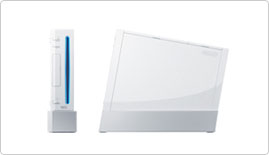
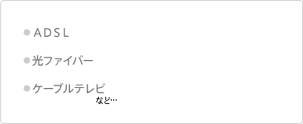
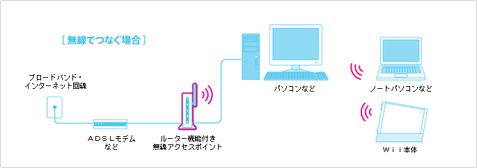
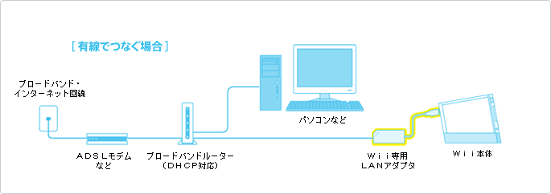
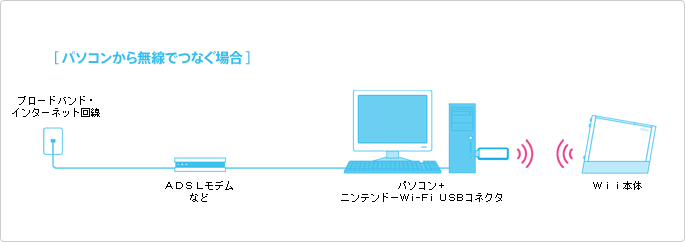
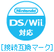

 |
 |
   |
|
モデムとルーターが一体化している機器などもあります。まずはどの方法で接続したいか考え、お手元の機器がどの機能を持っていて、どの機能が足りないのか確認してください。
すでにご自宅に無線ＬＡＮ環境をお持ちの方は、無線での接続がおすすめです。Ｗｉｉ本体に無線ＬＡＮ接続の機能が搭載されているので、設定が済めばすぐにインターネットに接続できます。また、部屋がケーブルだらけになるのがイヤ！という方も、これを機に、パソコンも無線ＬＡＮで接続してみてはどうでしょうか？
ご自宅に無線ＬＡＮ環境がない場合は、別売の「Ｗｉｉ専用ＬＡＮアダプタ」を使って、有線ＬＡＮでも接続が可能です。
インターネットにつながったパソコンに別売のニンテンドーWi-Fi USBコネクタを接続すると、パソコンが無線ＬＡＮアクセスポイントの代わりになります。ニンテンドーＤＳのWi-Fi接続用に使っていたものがＷｉｉでもそのまま使うことができます。ただし、ＷｉｉではWiiConnect24という常時接続サービスがありますが、ニンテンドーWi-Fi USBコネクタを使ってこのサービスを利用する場合は、パソコンの電源を入れた状態にしておく必要があります。
詳しいつなぎかたについては、任天堂ホームページの「Ｗｉｉサポート」のページで詳しく説明していますので、そちらをご覧ください。
また、設定していく中でわからないことが出てきた場合は、ぜひ「Ｗｉｉサポートセンター」を活用してください。
電話番号は 0570-020-210。平日および土日の朝9時から夕方5時まで受付しています。
さて、ここでは、サポートセンタースタッフに聞いた、よくある接続トラブルの例をご紹介することにします。接続がうまくいかない場合は、一度チェックしてみてください。
Ｗｉｉをインターネットに接続する際に、ルーターを必要とするプロバイダがあります。どれを購入していいかわからないという方は、Ｗｉｉサポートセンターに問い合わせてみてください。また、無線ＬＡＮアクセスポイント機能の付いたルーターは任天堂ホームページでも紹介しています（なお、ルーターの設定にはパソコンが必要になります）。 ちなみに、動作確認済み無線ＬＡＮアクセスポイントには「接続互換マーク」が付いているものがありますので、店頭での参考にしてください。 |
無線ＬＡＮ設定に必要なキーを確認しましょう。パソコンを無線ＬＡＮ接続されている場合と同じキーを思い出してみてください。忘れてしまった場合は、再設定が必要ですので、設定し直してください。まれに、キーに何も設定していない方もいらっしゃるようです。その場合、キーには何も入力せずにＯＫを押せば接続できるようになりますが、勝手に他の人が無線ＬＡＮを使える状態なので、必ず設定するようにしましょう。 |
Ｗｉｉ本体と無線ＬＡＮアクセスポイントが離れた場所に置かれていないでしょうか。Ｗｉｉ本体と無線ＬＡＮアクセスポイントが離れている場合、電波が届かずうまく接続できないことがあります。なるべく同じ部屋あるいは近い場所で接続するようにしましょう。 |
ルーターからＩＰアドレスが自動で取得できない場合は、手動で入力する必要があります。少々難しい設定になるので、わからないときはＷｉｉサポートセンターにお問い合わせください。 |
セキュリティのキーも間違っていないし、無線ＬＡＮアクセスポイントも近くにある。どうにも原因が見つからない、というときは、無線チャンネルを変えてみるとつながる場合があります。 |
モデムに直接つないでいないでしょうか。プロバイダによってはＷｉｉを接続するにはルーターを通す必要があります。接続されている機器がモデムなのか、ルーターなのか確認しましょう。
|
|||